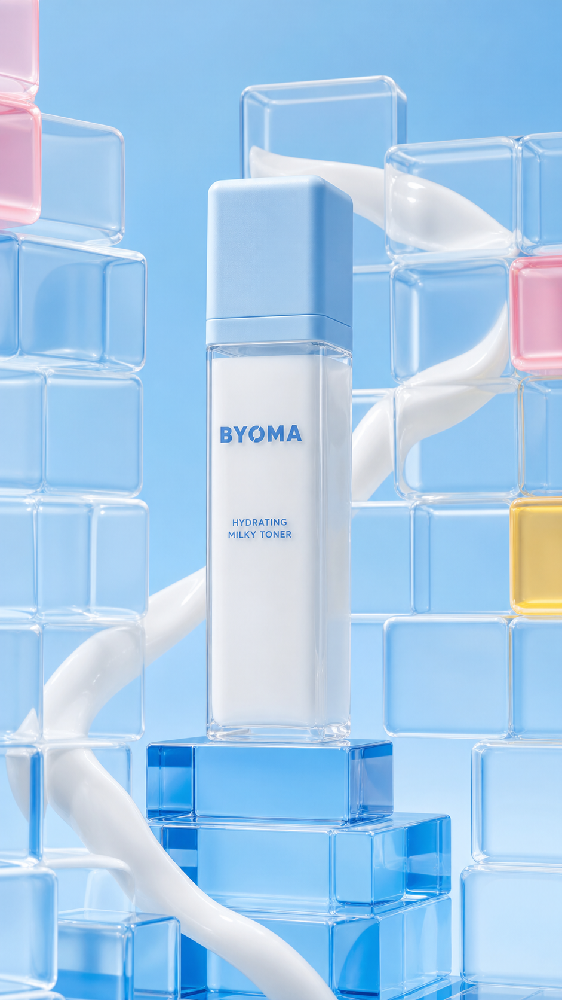

Concept created by LoomixUnsolicited concept
BYOMAReels + TikTok9:168 seconds
Hydrating Milky Toner — Rebuild the Grid
The modular package becomes the motion system: a milky stream travels through a broken translucent grid, snapping each soft-edged block back into place around the bottle.
Create the full adOpen product pageAI-generated visual direction

Concept art for discussion only. Product and brand belong to BYOMA.
Hooks
Milk the moment. Rebuild the grid.Hydration in every block.A milky path back to balance.
Six-shot storyboard
- Open on a broken blue cube grid.
- Pour one smooth milky toner ribbon.
- Guide the ribbon through the gaps.
- Snap each rounded block back into place.
- Reveal the bottle inside the rebuilt frame.
- End on product, hook, and CTA.
Caption
A playful barrier story built from milk, motion, and BYOMA blue.
LoomixLoomix turns one product photo into a storyboard, short video, captions, and ready-to-post ad copy.